5. EVerest Module Configurations¶
In the following, we will dive into some exemplatory scenarios to show how modules can interact with each other.
To understand the tool side, we will look at the mechanisms of the Admin Panel.
Additionally, there will be a section which explains module features in more detail soon.
5.1. Module connections for dedicated use cases¶
EVerest is a modular framework.
For devices like powermeters or hardware boards, you will have implementations of a corresponding driver module. Fields like energy management, authentication or protocol implementations - everything is delivered (or can be implemented by you) via an EVerest module.
All those modules required for a dedicated system environment will have to be connected so that they an communicate with each other. Such a configuration could look like this:
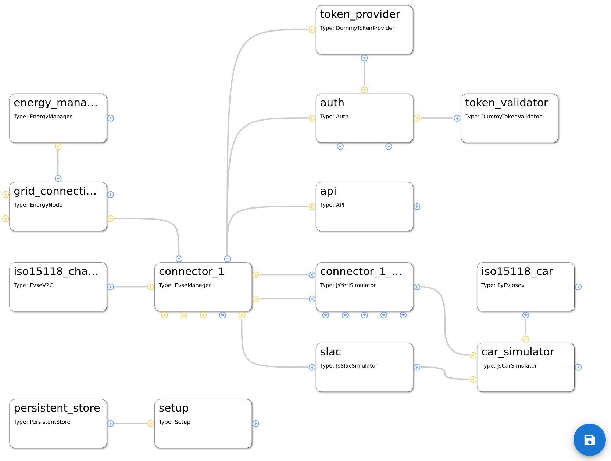The functional mechanisms behind this will be explained later.
The real magic of EVerest will be unleashed by wiring the modules together. Based on the connections of modules, the core modules of EVerest will provide fancy stuff like automatic power-sharing between multiple EvseManagers or the correct representation of the charging environment inside the backend instances via OCPP.
To understand connections for different use cases and how to map hardware scenarios to EVerest configurations, let’s have a look at some simple connection scenarios and step by step walk on to some more complex ones.
If you want to have a very quick overview without the details, see Quick Overview on this page.
More detailed scenarios and special relations between modules are shown afterwards.
But first, let’s have one look at the Admin Panel and how you can build your own configuration.
5.1.1. Module configuration with the Admin Panel¶
Having started MQTT, the EVerest manager process and Node-RED as shown in the dedicated Quick Start Guide sections, you can access the Admin Panel on your machine with the following URL:
http://localhost:8849/
Right in the beginning, the Admin Panel will just show a blank page.
As soon as we will start working with module configurations, you will see something like the following picture, in which each box represents a module in EVerest:
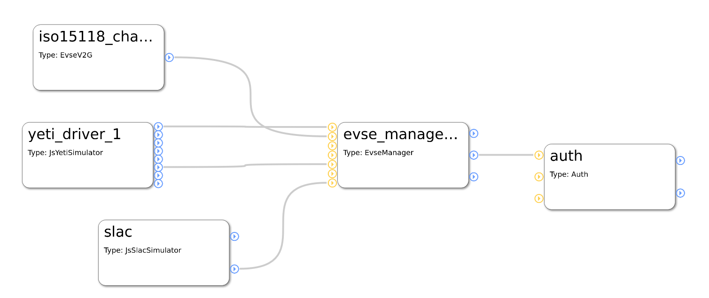You can see five modules with their connections.
The Admin Panel helps you with all needed steps to setup your dedicated configuration scenario:
Setup all modules that you need for a use case,
connect those modules,
set the configuration of the modules
analyze which implementations the modules require or provide.
5.1.1.1. Add modules to the configuration¶
Click on the menu symbol at the upper left corner to open the main menu and click on Config. A new left side-menu will appear.
There, you can see three menu items. Choose Available modules to access the list of existing modules. After left-clicking on the plus sign right to the module name, it will be shown in the main canvas.
Hint
Click on the name to get a short description of the module.
This way, you can add all modules that you will need.
To start with an existing configuration, that you can then adjust to your needs, click on the Available configs menu item in the left side-menu and choose an existing configuration.
Warning
Be aware that by loading an existing configuration, all your modules or changes will be discarded. So, be sure to save your setup by clicking on the save symbol in the lower right corner of the canvas.
Next, let’s see how modules can be connected to each other.
5.1.1.2. Module connections and module parameters¶
Each module has blue and/or yellow circles.
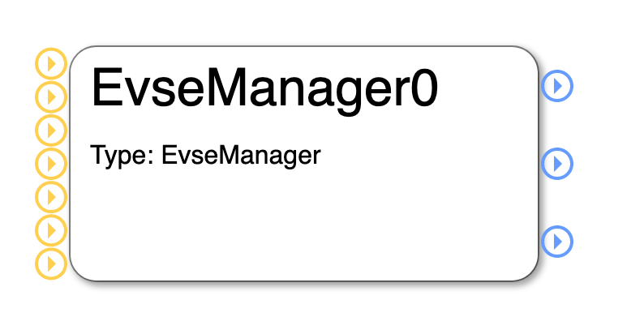{kind=link}
They represent the interface implementations that the modules require (yellow) from respectively provide (blue) for other modules.
If you click on one of those circles, you will get more information about the exact interface implementation that is provided or required:
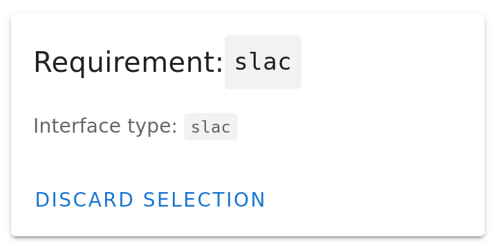 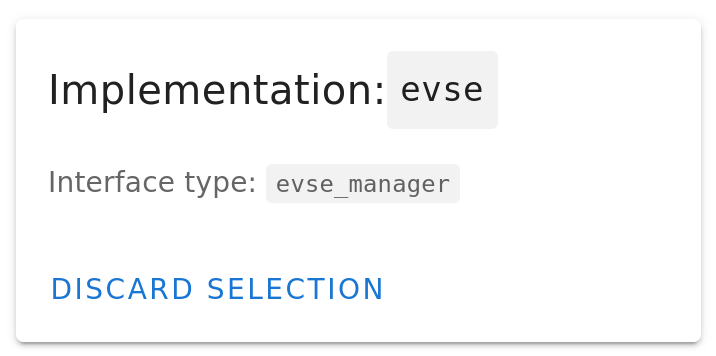{kind=link}
{kind=link}
The first picture shows the information that you get after clicking on the EvseManager’s lower yellow circle. You see that the EvseManager requires an implementation of SLAC which is described in the interface called slac in EVerest.
The second picture is the information you get after clicking on the middle blue circle of the EvseManager module. It tells that the EvseManager module provides an implementation of the interface evse_manager.
To close the information box again, click on Discard Selection.
The other blue circles of EvseManager will tell you that it also provides implementations of the interfaces energy and auth_token_provider - which could be a little bit surprising, but we will learn about that in later sections when talking about the configurable use cases in EVerest.
A module has also parameters that determine the behaviour of the module in a dedicated environment. You can see the parameters of a module by clicking on the module’s title. In a right side-bar, all config parameters will be listed:
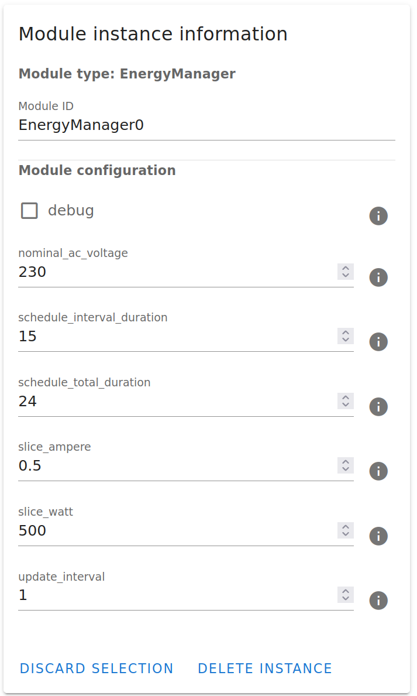{kind=link}
For getting some information on the meaning of those parameters, click on the i-symbol to the right of each parameter.
Now, it is time to connect one module to another one.
Assuming, you have the EvseManager and a GenericPowermeter added to your canvas, click on the blue circle at the right of the GenericPowermeter (it provides a powermeter implementation) and after that click on the middle yellow circle to the left of the EvseManager (which represents the requirement for a powermeter implementation).
You have created a connection between those two modules, which is indicated by a grey line between the modules:
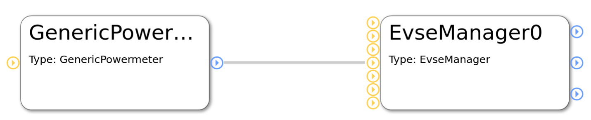{kind=link}
In a next step, let’s look at an example module configuration.
5.1.2. Very quick overview¶
Start analyzing the following picture at module evse_manager.
To the right, you will see two protocol implementations for ISO 15118 and SLAC. (This picture will be updated soon as the JsRiseV2G module is deprecated.)
At the bottom of the EvseManager, the yeti_driver module is the implementation of the board support but also provides an implementation of a powermeter.
The connection from the Yeti driver to the ‘car_simulator’ module is only needed in simulation scenarios and will not be used in production scenarios.
The EvseManager has a connection to the authentication functionality on top of it. A token_provider (e.g. a driver for an RFID device), a token_validator (checking if tokens are valid) and an auth module decide if energy is allowed to be delivered via one of the connected EvseManagers.
The connection from EvseManager to the left is the source of power that is needed for the charging process to work - eventually with energy management logic.
All this will now be explained in much more detail including the modules in the picture that we haven’t talked about yet.
5.1.3. Charging station and charging points¶
The EvseManager module is the central module for an EV charging scenario. It represents one charging point.
An EvseManager will need protocol implementations, hardware drivers and a grid connection to work in a meaningful way.
See this simple part of a module network:
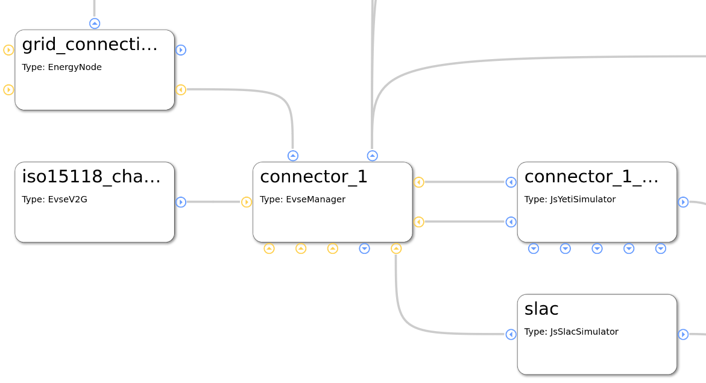The picture above shows a part of a module configuration from the EVerest Admin Panel. Yellow connection points show requirements for interface implementations, blue ones show interface implementations that the module provides. For more information on that, see the Module Concept page.
The EvseManager has basic charging logic implemented (IEC 61851, PWM State Machine). It knows the status of the current charging session regarding time of charging start, point of times to pause the session or the amount of energy already delivered to the output.
For measuring the energy, a powermeter is necessary. The Yeti Driver module in the example above is a board support implementation, but also delivers an implementation of a powermeter. This is why you see two connections between the EvseManager and the YetiDriver: Each connection stands for one interface implementation that is provided from one module to another one that requires it.
This way, you could connect another powermeter module but keep the Yeti Driver module for board support. That makes things nicely flexible.
Another two connections go from the EvseManager to two protocol implementations: ISO 15118 and SLAC. Such connections to protocol implementations allow the EvseManager to “talk” to other devices using that protocol. E.g. if you connect the EvseManager via the board module to a car, the car also needs to “know” about ISO 15118 so that communication can work.
The connection to the left is needed for the EvseManager to get power from somewhere. In the example above, the grid connection module will deliver energy. This is the part where in more complex scenarios an energy management logic can be set up or loadbalancing between more than one EvseManagers will take place.
5.1.4. Authentication for charging¶
For a power consumer to be allowed to take energy out of a charging point, we will need some kind of authentication mechanism. Let’s take a look at the following part of an EVerest configuration:
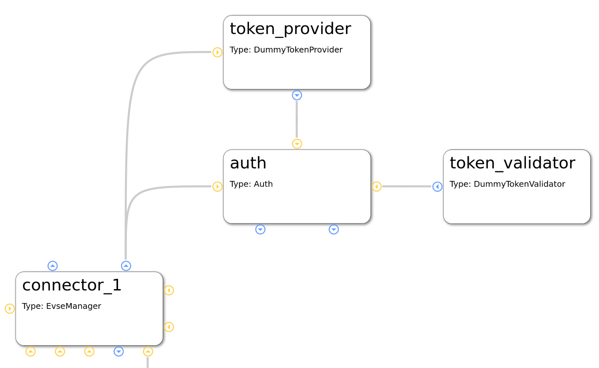{kind=link}
We already know the module in the lower left corner of the picture. You can see the auth module, which obviously plays a big role for authentication. This module provides an implementation for managing authentication but also reservation of charging points.
Easily put, the auth module takes an authentication token, gives the token to some instances which can validate tokens and as soon as a validation arrives, the auth module chooses an EvseManager to be activated for charging.
This has now already explained the roles of the token provider and validator modules. A token provider could be a driver implementation of an RFID device which delivers an identification number. The token validator checks if it can identify a token as an allowed consumer for energy.
The auth module can have multiple token validators which will be called one after the other. If one of them can validate the token, power can flow.
5.1.5. Car simulation¶
One big strength of EVerest is the integrated possibility to allow for simulating real world scenarios with a charging car connected to an EVSE.
Simply connect a car_simulator module to the board support module of an EvseManager like shown here:
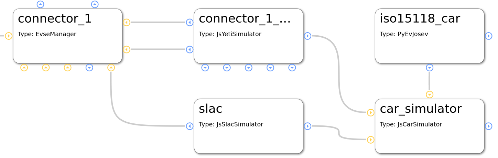{kind=link}
The modules in the left part of this picture have been described earlier. The car_simulator takes the role of a car to enable proper communication between car and EVSE.
In fact, this simulates the voltages and the PWM duty cycle. (Hint: If you start a Node-RED simulation with EVerest, the car simulator module is the instance that controls the simulation regarding charging power and charging status).
See the iso15118_car module connected to the car simulator module. This enables ISO 15118 compliant communication for the car simulator. If we assume that the EvseManager also has a connection to a ISO 15118 protocol implementation (as seen in configuration before), this should work out well.
One interesting detail is the connection of the SLAC module not only to the EvseManager but also to the car simulation module. This is due to the fact that SLAC sets up the physical communication between the EVSE and car (simulation).
5.1.6. Energy management¶
One simple scenario for energy management can be realized by connecting two EvseManagers with a grid connection module:
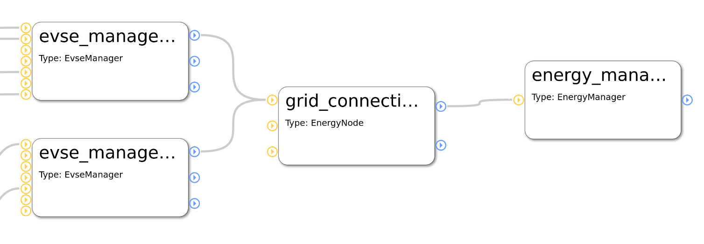In this case, as long as no other energy management logic is provided (e.g. via OCPP or other energy management implementations), there will be automatic power sharing between the two EvseManagers.
More sophisticated energy management which is done for more than only one physical charging device will be possible soon as we are implementing a solution for remote communication between multiple EVerest instances.
5.1.7. DC charging¶
A short hint for realizing DC charging:
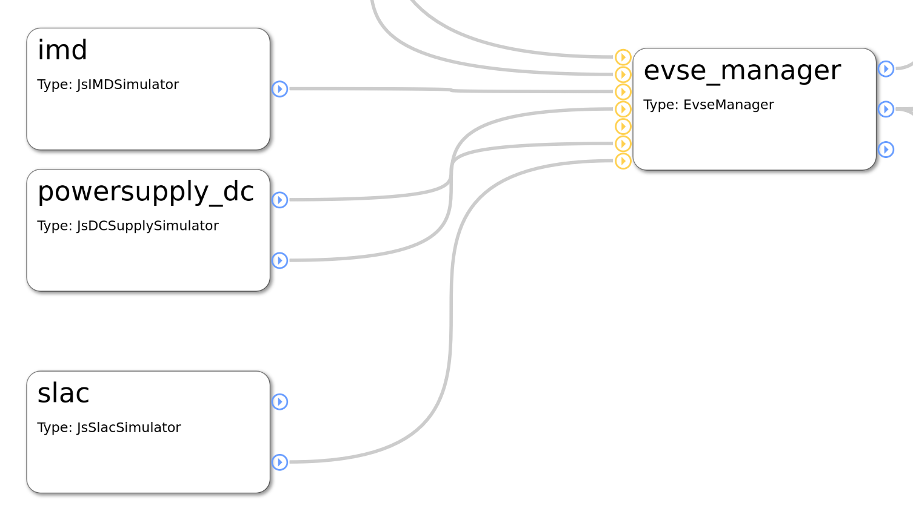A more detailed use case will follow.
5.2. Module functionality in detail¶
TODO: This section is yet to be created. Existing module documentation listed here are eventually to be updated.
Addtionally, you can have a look at the documentation regarding interfaces for a bank transaction process here: Bank Transaction Handling